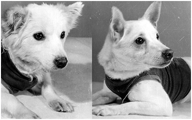
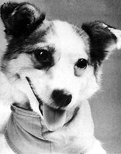
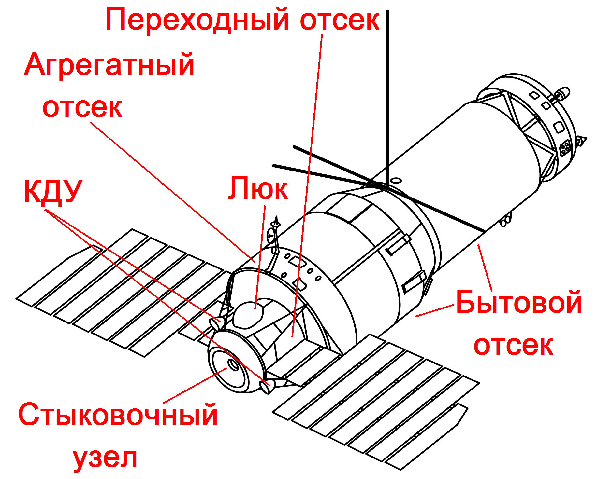

Освоение космоса
- Запуск ракет
- Космические аппараты
- Мы были первые
- Полеты первых собак в космос
Запуск ракет
Космическая гонка началась в 1950-х годах между Советским Союзом и Соединёнными Штатами Америки. 4 октября 1957 года СССР вывел на орбиту первый искусственный спутник Земли (ИСЗ) — «Спутник-1». По состоянию на 2016 год, на земной орбите находятся искусственные спутники около пятидесяти стран, однако лишь 14 государств исторически достигали возможности запускать их собственными ракетами-носителями, и 11 имеют эту возможность сейчас.
Ракета - аппарат, действующий по принципу реактивного движения и предназначенный для выведения полезной нагрузки в космическое пространство.
Исследования и освоение космоса приносят прежде всего практическую пользу. Теперь в нашем распоряжении надежная спутниковая теле- радиосвязь, точные прогнозы погоды и многое другое. Но в результате исследований, резкого увеличения числа запусков ракет-носителей все чаще происходит загрязнение земной и околоземной среды, что пагубно влияет на экологию Земли.
Чтобы достичь высоты в 118 км, ракете требуется примерно 500 секунд, что меньше 10 минут. Высота в 118 км(100км) это так называемая линия Кармана, где аэронавтика становится полностью невозможной. Принято полагать, что полет считается космическим, если линия Кармана была преодолена.

В 1962 году советские космические корабли «Восток-3» и «Восток-4» совершили первый групповой полет.
В 1963 году в космос полетела первая женщина-космонавт Валентина Терешкова, а космонавт Быковский установил рекорд длительности одиночного полета - почти 5 суток.
В 1964 году состоялся запуск первого в мире многоместного космического корабля «Восход». Американские многоместные корабли появились в 1965 году.
После 1975 года разворачивается работа над многоразовой космической системой «Энергия - Буран». Одноразовая ракета-носитель, затратив то же количество топлива, может вывести на орбиту в 3-4 раза больший полезный груз, чем в трюме «Космического челнока». Поэтому у нас разработали универсальную ракету- носитель «Энергия», для которой «Буран» был только одним из вариантов полезной нагрузки. Когда разрабатывали «Челноки», одно из их главных преимуществ рассматривали не то, сколько они груза поднимут на орбиту, а возможность ремонта спутников на орбите и снятие их, при необходимости, с орбиты. РН «Энергия» - первая, где был реализован модульный принцип (сегодня осуществляется в РН «Ангара»). Боковушки «Энергии» - это первые ступени РН «Зенит».
Космические факты
Россия использует пять космодромов. На Байконуре, который находится на территории Казахстана, было произведено 1 526 запусков. На космодроме Плесецк - 1 176, на космодроме Капустин Яр - 101, космодроме Свободный - 4, на космодроме «Баренцево Море» - 1.
США оперировала 8 космодромами, главные из которых находятся на мысе Канаверал во Флориде (575 запусков) и на авиабазе Ванденберг в Калифорнии (617).
У Китая три космодрома, у Японии два, у Европейского Космического Агентства, Индии, Австралии, Франции, Израиля, Бразилии, Северной Кореи - один космодром. Действует также международный космодром Зеа Баипсй в Тихом океане, который используют несколько стран мира, в том числе и Россия (всего произведено 7 запусков). В общей сложности на космодромах было произведено 4 518 запусков (данные 2004г.)
Стартовый комплекс «Ангара» позволит выводить космические аппараты на высокоэнергетнческие орбиты, а также запускать пилотируемые корабли нового поколения. «Ангара» - семейство ракет- носнтелей модульного типа с кислородно- керосиновыми двигателями, включающее в себя носители четырёх классов - от лёгкого до тяжёлого - в диапазоне грузоподъемностей от 1,5 («Ангара 1.1») до 35 («Ангара-А7») тонн на низкой околоземной орбите (при старте с космодрома «Плесецк»). Головным разработчиком и производителем РН семейства «Ангара» является Государственный космический научно-производственный центр имени М. В. Хруничева.
Цель создания этого ракетного комплекса - вывод на геостационарную орбиту полезных нагрузок с территории России (космодромы «Плесецк» и «Восточный»). В настоящее время ракета-носитель «Протон» запускается только с космодрома «Байконур». «Ангара» снимает проблему использования тяжёлых ракет-носителей с токсичным топливом (гептил). В «Ангаре» будет использоваться экологически чистое топливо на основе керосина.
Космические аппараты

Мы были первые
Впервые в истории человечества в нашей стране была осуществлена мечта полета человека в космос, освоение и заселение землянами безграничных просторов космоса.
Константин Эдуардович Циолковский, выдающийся русский ученый, впервые в истории человечества разработал научно обоснованную, математически выверенную теорию проникновения в космическое пространство, освоения и заселения землянами безграничных просторов космоса. Через всю свою долгую жизнь Циолковский пронес веру в то, что человек полетит к звездам. В 1903 году он опубликовал работу, название которой многим казалось скорее забавным, чем серьезным: «Исследование мировых пространств реактивными приборами». Но это была не фантастика, не умозрительные догадки. Космический корабль забрасывала в космос уже не буря, а строгие формулы, впервые выведенные учителем калужской гимназии. Его записи сохранили многие идеи, верность которых доказало время. Жизнь Циолковского - яркий пример служения любому делу. Все свои труды он завещал Коммунистической партии и советскому народу. Ныне во всем мире К.Э. Циолковский по праву признан основоположником теоретической космонавтики.
Родоначальником практической космонавтики стал ученик Циолковского К.Э. Королев С.П. и совместно с учеными Келдышем М.В. и Курчатовым И.В. осуществили "мечту" человечества и 4 октября 1957 года в 22 часа 28 минут 4 секунды со стартового комплекса космодрома Байконур в зенит ушел первый в мире искусственный спутник Земли весом 83,6 килограмма. Это была не только научно- техническая, но и мировоззренческая побед. II победа политическая, поскольку запуск первого спутника показал, каких высот достигла в своем развитии наша Родина. 3 ноября 1957 года состоялся старт второго искусственного спутника Земли - весом 508,3 килограмма. Опять-таки впервые в истории на орбите вокруг земного шара вращалось живое существо - собака Лайка. Этот полет имел очень важное значение для будущего космонавтики: была доказана принципиальная возможность нормального существования живого организма в условиях космического полета. В мае 1958 года на орбиту был выведен третий искусственный спутник Земли, весом 1327 килограммов. Так появилась первая автоматическая научная летающая лаборатория, запуск которой стал подлинным триумфом советской науки и техники.
В начале 1959 года состоялся запуск ракеты с автоматической межпланетной станции (АМС) «Луна-1». Так был открыт путь к Луне. 14 сентября 1959 года после полуторасуточного полета автоматическая межпланетная станция «Луна-2» доставила на луну вымпел с Гербом Советского Союза. Впервые совершился перелет на другое небесное тело. Луна всегда обращена к Земле лишь одной своей стороной. Многие поколения астрономов мечтали увидеть «лунный затылок». Его фотографию прислало на Землю АМС «Луна-3», запущенная в октябре 1959 года. Для своего времени это был эксперимент высочайшей сложности: тут н сложная траектория полета, н автоматическое наведение фотоаппаратуры на Луну, фотографирование н передача на Землю снимков, которые весь мир назвал «фотографиями века». Так родился первый лунный глобус, н человек увидел веками от него скрытое. Впервые человек приступил к непосредственному исследованию небесных тел.
Одна из ближайших наших космических «соседок» - планета Венера считалось наиболее похожей на Землю по своим природным условиям. Однако сказать что-то определенное о Венере астрономам мешала густая и плотная облачная атмосфера, закрывающая всю ее поверхность. Раскрыть тайны Венеры могли лишь непосредственные исследования этой планеты, начатые в феврале 1961 года, когда впервые в мире к ней стартовала автоматическая межпланетная станция (АМС) «Венера-1». Но только шесть лет спустя АМС «Венера-4» смогла установить, давление атмосферы и температуру на поверхности планеты. В августе 1970 года в далекий путь отправилась АМС «Венера-7». Ее спускаемый аппарат был рассчитан на самые суровые условия существования - давление до 180 атмосфер и температуру 530 оС. Впервые в мире он совершил мягкую посадку на поверхность Венеры, провел измерения атмосферы вплоть до самой поверхности планеты. Осенью 1975 года «Венера-9» и «Венера-10», а весной 1982 года «Венера-13» н «Венера-14» совершив мягкую посадку на поверхность планеты, впервые в истории передали на Землю черно-белые и цветные изображения поверхности этой планеты. Исследования планеты были продолжены станциями «Венера-15 и 16» и «Вега-1 и 2».
11 августа 1962 года стартовал космический корабль «Восток-3», пилотируемый Андрияном Григорьевичем Николаевым. На следующий день на околоземную орбиту вышел космический корабль «Восток-4» с Павлом Романовичем Поповичем на борту. Впервые над планетой летели сразу два космических корабля, которые установили между собой устойчивую радиосвязь. В процессе полета минимальное расстояние между кораблями было всего около шести километров, что подтвердило высокую точность выведения кораблей на орбиту и позволило вплотную приблизиться к проектам полетов со стыковкой в космосе. Четкая многомесячная система наземных тренировок позволила космонавтам установить рекорды продолжительности пребывания человека о невесомости. А. Николаев за 95 часов 64 раза облетел земной шар. П. Попович совершил 48 космических кругосветок, проработав в космосе около 71 часа. Во время совместного полета из космоса впервые велись телевизионные передачи - так в августе 1962 года родилось космическое телевидение.
Марс безусловно, самая популярная у землян планета Солнечной системы. Удавалось даже разглядеть на поверхности планеты подобие земных каналов, которые поспешили отождествить с ирригационными сооружениями марсиан. Все это вызывало к Марсу особый интерес. 1 ноября 1962 года в Советском Союзе был произведен запуск первой в мире межпланетной станции «Марс-1», положивший начало непосредственному изучению Марса с помощью космических аппаратов. Следующий важный этап в изучении Марса ознаменован первой в истории мягкой посадкой космического автомата «Марс-3» на поверхность планеты в декабре 1971 года. В дальнейшем полеты еще четырех АМС серии «Марс» позволили получить интереснейшие фотографии марсианских пустынь и кратеров. Работы над «Луной», «Венерой» и «Марсом», начатые С.П. Королевым, были продолжены в КБ, возглавляемом членом-корреспондентом АН СССР, Главным конструктором космической техники. Героем Социалистического Труда, лауреатом Ленинской премии Г.Н. Бабакиным. Под руководством Главного конструктора ракетных двигателей, Героя Социалистического Труда, лауреата Ленинской и Государственных премий А.М. Исаева были созданы двигатели для аппаратов серий «Луна», «Зонд», «Венера» и «Марс».
16 июня 1963 года, через два дня после старта корабля «Восток-5», пилотируемого Валерием Федоровичем Быковским, на околоземную орбиту поднялся «Восток-6». Впервые в мире командиром космического корабля была женщина - гражданка Советского Союза Валентина Владимировна Терешкова. Это был второй совместный полет двух кораблей. «Чайка» - такой позывной был у Терешковой - летала в космосе около 70 часов, а Быковский - более 119. Своим полетом и работой В. В. Терешкова показала, что в космических полетах и женщина может трудиться достаточно эффективно. Женщина в космосе! В этом нашли свое замечательное и убедительное проявление те поразительные перемены, которые произошли в жизни народов нашей страны за годы Советской власти.
Славно трудились в космосе «Востоки» одноместные космические корабли. Но пришло время, и на стартовой площадке Байконура появились орбитальные аппараты более совершенной конструкции - «Восходы», способные вмешать в себя целые экипажи. 12 октября 1964 года впервые в мире в космос стартовал многоместный космический корабль «Восход». Его командиром был инженер-полковник Владимир Михайлович Комаров. В состав экипажа входили Константин Петрович Феоктистов н Борне Борисович Егоров. За сутки полета экипаж провел разнообразные научные, технические и медико-биологические эксперименты. Впервые была опробована система мягкой посадки. Это был первый космический экипаж. Несмотря на то, что полет был недолгнм, в нем впервые были решены вопросы психологической совместимости членов экипажа, при полетах в космическое пространство, полетах систематических, длительных, в которых будут трудиться люди разных профессий. Свидетелями таких полетов мы уже стали.
Принципиально новый шаг в космонавтике был сделан в январе 1969 года. На корабле «Союз-4» стартовал космонавт Владимир Александрович Шаталов. На следующий день на орбиту был выведен космический корабль «Союз-5» с командиром Борисом Валентиновичем Волыновым, бортинженером Алексеем Станиславовичем Елисеевым и инженером- исследователем Евгением Васильевичем Хруновым. В космосе корабли сблизились, а затем и состыковались, образовав единый орбитальный комплекс. После этого Елисеев и Хрунов вышли в открытый космос, и перешли из орбитального отсека «Союза-5» в орбитальный отсек «Союза-4». Подобная «пересадка» на орбите из корабля в корабль была осуществлена впервые в мире. Создание первой экспериментальной космической станции явилось началом принципиально нового направления в космических исследованиях - создания и отработки пилотируемых орбитальных станций со сменными экипажами. Экспериментальная станция 1969 года - прообраз грандиозных космических сооружений.
3 февраля 1966 года впервые в мире была осуществлена мягкая посадка станции «Луна-9» на поверхность Луны. Это было трудно сделать хотя бы потому, что, лишенная атмосферы, Луна не может затормозить летящий аппарат, а скорость станции «Луна-9» составляла 2600 метров в секунду. Не менее новаторской работой советских ученых и инженеров стал полет «Луны-10» весной 1966 года. Осуществление мягкой посадки на Луну и дальнейшее совершенствование космической аппаратуры позволили в сентябре 1970 года совершить первый в истории рейс автоматического аппарата «Луна-16» по маршруту Земля-Луна-Земля. Его спускаемая часть доставила ученым образцы лунного грунта, что помогло разобраться в строении нашей небесной «соседки». Самым популярным космическим автоматом стал «Луноход-1» - первый в истории передвигающийся аппарат, доставленный на Луну станцией «Луна-17» 17 ноября 1970 года. За более чем десятимесячную вахту управляемый с Земли «Луноход» прошел более 10 километров, обследовал лунную поверхность на площади 80 тысяч квадратных метров, передал на Землю более 200 панорам Луны и 20 тысяч снимков ее поверхности. Двадцать четыре раза стартовали к Луне советские автоматические станции, обогатив наши знания о ней бесценными данными.
Новым шагом в развитии космонавтики стало создание орбитальной станции «Салют», выведенной на орбиту 19 апреля 1971 года. В июне того же года космический корабль «Союз-11» (командир - Г.Т. Добровольский, бортинженер - В.Н. Волков и инженер-испытатель - В.II. Пацаев) состыковался со станцией, и космонавты перешли в нее. Впервые в мире была решена инженерно- техническая задача доставки экипажа транспортным кораблем на борт орбитальной станции - спутника Земли. Совершив 385 витков вокруг земного шара, три космонавта проработали на орбите более 23 дней. Это был для своего времени самый длительный космический полет. 30 июня 1971 года при возвращении экипажа на Землю в результате разгерметизации спускаемого аппарата космического корабля экипаж первой в мире орбитальной станции погиб. Вслед за первой орбитальной станцией «Салют» работали еше б станций этой серии. «Салют-6 и 7» - станции второго поколения, оснащенные двумя стыковочными узлами, что позволило с помощью грузовых кораблей «Прогресс» доставлять регулярно на станцию топливо, оборудование, продукты. На этих станциях были осуществлены рекордные по длительности полеты - 96, 140, 175, 185, 210, 237 суток.
Первый в мире международный космический полет состоялся в июле 1975 года. Стартовавшие 15 июля с космодрома на мысе Канаверал американский космический корабль «Аполлон» и с космодрома Байконур советский космический корабль «Союз-19» встретились 17 июля 1975 года на орбите спутника Земли и состыковались. Специальный переходной модуль позволил членам международного экипажа переходить из корабля в корабль и проводить совместные работы. После выполнения намеченной программы корабли расстыковались и произвели посадку в заранее намеченных точках. Членами международного экипажа экспериментального полета «Союз» «Аполлон» (ЭПАС) с советской стороны были командир корабля А.А. Леонов и бортинженер В.Н. Кубасов, с американской стороны - командир корабля Томас Стаффорд и астронавты Вэнс Бранд н Дональд Слейтон. Совместный полет советского н американского космических кораблей позволил выполнить насыщенную научную программу ЭПАС, но главное значение этого полета видится в том, что он стал прекрасным примером плодотворного научного сотрудничества стран, принадлежащих к различным социальным системам.
Для координации работ по сотрудничеству международных космических программ решением Советского правительства в 1966 году был создан Совет по использованию космического пространства при Академии наук СССР, сокращенно называемый «Интеркосмос». Программы «Интеркосмоса» разрабатываются в тесном сотрудничестве со специалистами социалистических стран, а также с научными центрами Франции, США, Индии, Швеции, Австрии. 14 октября 1969 года - день рождения первенца - «Интеркосмоса-1 » - спутника для изучения Солнца. Эти исследования были продолжены на спутниках «Интеркосмос-4, -7, -11 »II других. 19 апреля 1973 года, когда весь мир отмечал 500- летие со дня рождения великого польского ученого Николая Коперника, на орбиту был выведен спутник «Интеркосмос-Коперник 500», исследовавший солнечные радповспышки н ионосферную плазму. Невозможно даже перечислить различные запуски, настолько насыщена программа, которая проводится под эгидой «Интеркосмоса»: и высокоапогейные спутники «Прогноз», и эксперимент «Снег», и «Стерео», и «Аркад». Аппаратура «Интеркосмоса» находилась на межпланетных станциях «Марс-3», «Марс-6» и «Марс-7», на «луноходах».
Успехи советской космонавтики и многолетняя совместная работа ученых и специалистов из других стран по программам международного сотрудничества позволили открыть принципиально новый этап работы человека в космосе - полеты международных экипажей. В 1978 году начались пилотируемые полеты па программе «Интеркосмос». На борту научной станции «Салют-б» и на кораблях «Союз» вместе с советскими коллегами работали космонавты Чехословакии, Польши, ГДР, Болгарии, Венгрии, Вьетнама, Кубы, Монголии, Румынии, а также Франции и Индии. Анализ результатов выполненных работ показал, что полученные сведения представляют большой интерес, как для развития науки, так и для народного хозяйства и экономики стран, участвующих в совместных исследованиях. Старты международных экипажей дают возможность ученым и специалистам других стран подняться на новую ступень в «космической интеграции». Совместные исследования в космосе приобретают значение важных международных программ.
Весна 1986 года ознаменовалась двумя крупными событиями в области космонавтики. Завершился многомесячный полет автоматических станций «Вега-1» и «Вега-2». Пролетев вблизи ядра кометы Галлея, космические разведчики провели анализ различных ее параметров. Впервые Удалось четко разглядеть само ядро кометы, скрытое от земных наблюдений. Установлено, что ядро кометы имеет неправильную, вытянутую форму, максимальный размер его не превышает 14 километров. Полет советских автоматических станций позволил более точно откорректировать орбиту международной европейской автоматической станции «Джотто», которой удалось пройти на расстоянии всего около 500 километров от ядра кометы. Другим важным событием в летописи космонавтики стал запуск орбитальной исследовательской станции «Мир». Она являлась космической станцией нового поколения. Шесть стыковочных узлов (вместо двух на станциях «Салют») позволили доставлять на станцию гораздо больше оборудования и приборов. Более комфортабельно выглядилн и ее отсеки, в которых предусмотрены даже изолированные индивидуальные микрокаюты для космонавтов. Первый экипаж станции «Мир» - Леонид Кизим и программу исследовательских работ. Впереди - новые старты!
Космонавтика играет все большую роль в нашей жизни. В первые годы освоения космоса полеты носили чаше всего поисковый, экспериментальный характер. Сегодня они приносят ощутимый экономический эффект, используются для решения многих народнохозяйственных задач. Космонавтика произвела революцию в области связи. Уже сегодня речь может идти о создании всемирной системы связи, связывающей любые точки земного шара. В 1967 году в нашей стране начала действовать и в течение всех последующих лет успешно развивалась система наземных станций «Орбита» с помощью спутников связи «Молния», «Радуга», «Экран», «Горизонт». Она ускорила п удешевила телефонную, телеграфно радиотрансляционную, а также телевизионную системы связи, позволила пользоваться ими в самых отдаленных районах нашей страны. Экономический эффект от их работы оценивается в миллиарды рублей. Искусственные спутники Земли и работа космонавтов позволили по-новому взглянуть на нашу планету, открыли эру космической геодезии и геологии, во много раз ускорили и облегчили поиск полезных ископаемых на обширных территориях нашей страны. Большую помощь морякам и летчикам оказывают навигационные спутники. Свободные от капризов погоды, они дают точные координаты судам и самолетам, обеспечивая безопасность на море и в небе.
Полеты первых собак в космос
Полёты собак в космос - серия биологических экспериментов, включавших проведение исследований по возможности полётов на геофизических и космических ракетах живых существ, наблюдение за поведением высокоорганизованных животных в условиях таких полётов.
Для полёта в космос использовали беспородных и бездомных собак. Именно эти животные к моменту испытаний уже прошли естественный отбор в условиях улицы и бродячего образа жизни. У дворняжек были отмечены крепкое здоровье, смекалка, неприхотливость в еде, лояльное отношение к человеку. Собак отбирали по особым параметрам, диктуемым особенностью исследовательского оборудования и размерами пассажирских кабин ракет. Требовались животные не тяжелее 6 кг и ростом не выше 35 см. Для правильного расположения датчиков более всего подходили короткошёрстные собаки. Первыми нашими космонавтами-испытателями были обычные беспородные дворняги - маленькие, неприхотливые и выносливые. Цыган, Дезнк, Лиса, Мишка, Чижик, Смелый, Рыжик, Непутёвый, Зиб(«Запасной исчезнувшего бобика») первый из «космических туристов» - вот они были первыми разумными существами, кто летом 1951 года, за 10 лет до полёта Гагарина, начал прокладывать дорогу в космос.
Первый этап научных исследований (июль - сентябрь 1951 года)
Дезик и Цыган - первые собаки, совершившие полёт на баллистической ракете В-1В (Р-1В) в верхние слои атмосферы до условной границы с космосом - 22 июля 1951 года с полигона Капустин Яр в Астраханской области в рамках проекта запуска человека на ракете по баллистической траектории. Весь полёт до приземления продолжался около 20 минут. Контейнер с собаками благополучно приземлился в 20 км от места старта.
Второй этап научных исследований (1954-1957 годы)
Второй этап исследований включал в себя испытания новой системы, катапультирующей аппаратуру и средства наблюдения за животными на всех уровнях полёта. Каждая из собак помещалась в отдельную катапультируемую тележку, которая отстреливалась из падающей головной части и спускалась на землю с помощью парашюта. Первая (правая) тележка отстреливалась на высоте 75-90 км, и практически сразу раскрывался парашют. Вторая (левая) тележка катапультировалась из падающей головной части на высоте 35 км, на высоте 3-4 км открывался основной парашют.
Третий этап научных исследований (1957-1960 годы)

Полёты собак на космических аппаратах предполагали орбитальные полёты вокруг Земли продолжительное время с первой космической скоростью. Основной целью экспериментов по запускам космических кораблей-спутников, было исследование влияния факторов космического полёта на организм животных. Полёты собак на кораблях-спутниках должны были доказать безопасность орбитальных космических полётов для человека. Космический корабль «Спутник-2» не предназначался для возвращения на землю. Но все же было принято решение, отправить на орбиту живое существо.
Это была красивая дворняжка по кличке Лайка. Ее нашли в одном из собачьих приютов. Подбирали по принципу - белая, маленькая, не породистая, так как должна быть не привередлива к еде. Ученые разработали систему кормления, два раза в день, систему ассенизации и сделали небольшую операцию, по вживлению датчиков. Один разместили у ребер, а другой у сонной артерии, чтобы следить за дыханием и пульсом. Лайку отправили в космос 3 ноября 1957 года. Сделав неправильные расчеты в терморегулировании, температура в корабле поднялась до 40 °С и в течении 5 часов собака умерла от перегрева. Лайка была обречена с самого начала.
1958 года в июле запустили собак Чайку и Лисичку, но на 19-й секунде полёта у ракеты-носителя разрушился боковой блок первой ступени, в результате чего она упала и взорвалась. Собаки Чайка и Лисичка погибли.

19 августа 1960 года собаки Белка и Стрелка стали первыми живыми существами совершившими суточный орбитальный полёт и благополучно вернувшимися обратно. За это время корабль совершил 17 полных оборотов вокруг Земли (1 день и 9 час.). Через некоторое время после приземления Стрелка принесла здоровое потомство шесть щенков, один из которых был отправлен в подарок жене президента США Джона Кеннеди Жаклин и их дочери Кэролайн.

В декабре этого же года, был запуск Спутника-6. Экипажем корабля были собаки Мушка и Пчёлка, две морские свинки, две белые лабораторные крысы, 14 чёрных мышеи, семь мышей гибридов и пять белых беспородных мышей. Полёт продолжался чуть более суток. На 17 витке из-за отказа системы управления ормозным двигателем, спуск начался в нерасчетном районе. Было принято решение чтожить аппарат путём подрыва заряда, с целью исключить незапланированное падение на чужую территорию. Все живые существа, находившиеся на борту, погибли.
25 марта 1961 года состоялся полёт собаки-космонавта Звёздочка. Полёт, в котором она участвовала, был последним полётом животного перед запуском человека в космос. До полёта в космос первого человека оставалось всего 18 дней. Кроме собаки Звёздочки, в капсуле корабля находились и другие подопытные биологические объекты, а также манекен космонавта «Иван Иванович». Через два часа полёта корабль был сведён с орбиты, и во время спуска от него катапультировалось кресло будущего космонавта с манекеном. Контейнер с собакой находился в спускаемом аппарате, который благополучно приземлился в Чайковском районе Пермского края, возле деревни Фоки. Одновитковый полёт на корабле прошёл успешно. Запуск корабля с манекеном на борту стал завершающей проверкой советского космического корабля перед полётом человека, состоявшимся 12 апреля 1961 года.
 Назад
НазадМКС
Управление МКС осуществляется: российским сегментом - из Центра управления космическими полетами в Королеве, американским сегментом - из Центра управления полётами имени Лондона Джонсона в Хьюстоне. Управление лабораторных модулей — европейского «Колумбус» и японского «Кибо» - контролируют Центры управления Европейского космического агентства (Оберпфаффенхофен, Германия) и Японского агентства аэрокосмических исследований (г. Цукуба, Япония). Между Центрами идёт постоянный обмен информацией.
В 1984 году Президент США Рональд Рейган объявил о начале работ по созданию международной орбитальной станции. В 1988 году проектируемая станция была названа «Freedom» («Свобода»). Но к началу 1990-х годов выяснилось, что стоимость разработки проекта слишком велика и было принято решение создать станцию совместно с Россией. И в марте 1993 года генеральный директор РКА Юрий Коптев и генеральный конструктор НПО «Энергия» Юрий Семёнов предложили руководителю НАСА Дэниелу Голдину создать Международную космическую станцию.
Март 1995 года - в Космическом центре им. Л. Джонсона в Хьюстоне был утверждён эскизный проект станции. 1996 год - утверждена конфигурация станции. Она состоит из двух сегментов - российского (модернизированный вариант «Мир-2») и американского (с участием Канады, Японии, Италии, стран - членов Европейского космического агентства и Бразилии).
20 ноября 1998 года Россия вывела на орбиту первый элемент МКС - функционально-грузовой блок «Заря».
7 декабря 1998 года - шаттл «Индевор» пристыковал к модулю «Заря» американский модуль "Юнити"
10 декабря 1998 года был открыт люк в модуль «Юнити», и Роберт Кабана и Сергей Крикалёв, как представители США и России, вошли внутрь станции.
7 февраля 2001 года - экипажем шаттла «Атлантис» в ходе миссии STS-98 к модулю «Юнити» присоединён американский научный модуль «Дестини».
Новый пилотируемый корабль был необходим для обеспечения независимого доступа США к станции, поскольку после катастрофы «Колумбии» 1 февраля 2003 года США временно не имели такого доступа к станции до июля 2005 года, когда возобновились полёты шаттлов. После катастрофы «Колумбии» было сокращено с трех до двух количество членов долговременных экипажей МКС. Это было связано с тем, что снабжение станции материалами необходимыми для жизнедеятельности экипажа, осуществлялось только российскими грузовыми кораблями «Прогресс».

Второй полёт шаттла после катастрофы «Колумбии» (Шаттл «Дискавери» STS-121) состоялся в июле 2006 года. На этом Шаттле на МКС прибыл немецкий космонавт Томас Райтер, который присоединился к экипажу долговременной экспедиции МКС-13. Таким образом, в долговременной экспедиции на МКС после трехлетнего перерыва вновь стали работать три космонавта.
Стартовавший 9 сентября 2006 года челнок «Атлантис» доставил на МКС два сегмента ферменных конструкций МКС, две панели солнечных батарей, а также радиаторы системы терморегулирования американского сегмента.
23 октября 2007 года на борту шаттла «Дискавери» прибыл американский модуль «Гармония». Его временно пристыковали к модулю «Юнити». После перестыковки 14 ноября 2007 года модуль «Гармония» был на постоянной основе соединён с модулем «Дестини». Построение основного американского сегмента МКС завершилось.

В 2008 году станция увеличилась на две лаборатории.
11 февраля был пристыкован модуль «Коламбус», созданный по заказу Европейского космического агентства, а 14 марта и 4 июня были пристыкованы два из трёх основных отсеков лабораторного модуля «Кибо», разработанного японским агентством аэрокосмических исследований герметичная секция «Экспериментального грузового отсека» (ELM PS) и герметичный отсек (РМ).
В 2008-2009 году начата эксплуатация новых Европейского космического агентства «АТV».
С 29 мая 2009 года начал работу долговременный Экипаж МКС-20 численностью шесть человек, доставленый в два приёма: первые три человека прибыли на «Союз ТМА-14», затем к ним присоединился экипаж «Союз ТМА-15».
12 ноября 2009 года к станции пристыкован малый исследовательский модуль МИМ—2 незадолго до запуска.
Возможности модуля позволяют производить на нем некоторые научные эксперименты, а также одновременно выполнять функцию причала для российских кораблей.
18 мая 2010 года успешно пристыкован к МКС российский малый исследовательский модуль «Рассвет» (МИМ-1).
В феврале 2010 года Многосторонний совет по управлению Международной космической станцией подтвердил продолжение эксплуатации МКС после 2015 года, а Администрация США предусмотрела дальнейшее использование МКС по меньшей мере до 2020 года, НАСА и Роскосмос рассматривают продление этого срока по меньшей мере до 2024 года и возможно продление до 2027 года.
 В 2011 году были завершены полёты многоразовых кораблей типа «Космический челнок».
В 2011 году были завершены полёты многоразовых кораблей типа «Космический челнок».
22 мая 2012 года с космодрома на мысе Канаверал запущена ракета-носитель «Falcon 9» с частным космическим грузовым кораблём «Dragon».
25 мая 2012 года КК «Dragon» стал первым аппаратом коммерческого назначения, состыковавшимся с МКС.
Орбитальные станции
Орбитальная станция (ОС) - космический аппарат, предназначенный для долговременного пребывания людей на околопланетной орбите с целью проведения научных исследований в условиях космического пространства, разведки, наблюдений за поверхностью и атмосферой планеты, астрономических наблюдений и т.п.
От искусственного спутника космическая станция отличается наличием экипажа, периодически сменяемого с помошью транспортных кораблей, доставляющих на ОС сменный экипаж, запасы топлива и материалов для функционирования технических систем станции, средства жизнеобеспечения экипажа, личную корреспонденцию его членов и другое оборудование. Спускаемый аппарат транспортного корабля доставляет на Землю сменённых членов экипажа и результаты проведённых исследований и наблюдений.
На ОС имеется комплекс технических систем, обеспечивающих коррекцию орбиты станции, её ориентацию. стабилизацию (гиродины), стыковку с транспортными кораблями, снабжение элекгроэнергией (солнечные батареи), жизнедеятельность и безопасность экипажа, связь с центром управления полётами, и выполнение поставленных задач.
ОС последних поколений (Мир, МКС) имеют модульную архитектуру - станция состоит из модулей - секций, доставляемых на орбиту по отдельности, и собираемых в единое целое на орбите. Такая технология позволяет создать станцию с массой, многократно превышающей максимальную полезную нагрузку одной ракеты-носителя.
Салют (космическая программа)
«Салют» - серия пилотируемых орбитальных станций CCCР.
Под общим названием «Салют» на орбиту выводились орбитальные станции по гражданской программе «Долговременная орбитальная станция».
«Салюты» выводились на орбиту ракетой-носителем "Протон".
Устройство орбитальных станций "Салют"
Основой всех советских и российских орбитальных станций является рабочий отсек (РО), представляющий собой цилиндр малого диаметра (диаметр 2,9м. длина 3,5м), соединённый конусной проставкой с цилиндром большого диаметра (диаметр 4,15м. длина 17м). В цилиндре малого диаметра размешаются центральный пост управления станцией. зона отдыха. места для хранения и принятия пищи. спальные места. В цилиндре большого диаметра размещаются научное оборудование. спортивные тренажёры, предназначенные для коррекции отрицательного влияния невесомости на организм космонавтов. душевая установка, в отдельном изолированном отсеке - космический туалет.
Снаружи корпус станций покрыт экранно-вакуумной изоляцией, препятствующей перегреву на освещенной Солнцем части орбиты и охлаждению в тени Земли. Также экранновакуумная изоляция защищает станцию от микрометеоритов. Газовый состав атмосферы на борту станций «Салют» по составу близок к Земному, поддерживается нормальное давление и температура. Углекислый газ, образующийся при дыхании космонавтов, поглощается в регенеративных патронах, при происходящей химической реакции в атмосферу станции выделяется кислород.
«Салют-1»
Перед цилиндром малого диаметра рабочего отсека установлен переходный отсек (ПО). Между переходным и рабочим отсеком - люк с герметичной крышкой. На переднем конце переходного отсека - пассивный стыковочный узел, снабжённый люком с герметичной крышкой для перехода в транспортный космический корабль «Союз». На боковой поверхности переходного отсека - люк для проникновения внутрь станции при строительных работах на Земле. Снаружи переходного отсека были установлены две неповоротные солнечные батареи («крылья»).
К заднему концу Цилиндра большого Переходный диаметра рабочего отсека прикреплён агрегатный отсек (АО ), в котором размещалась корректирующая двигательная установка (КДУ) с топливными баками, двигатели системы ориентации и их топливные баки.
Станция «Салют-1» была рассчитана на полёт трёх космонавтов.
«Салют-2», «Салют-3», «Салют-5»
«Салют—2»‚ «Салют-З», «Салют-5» - орбитальные станции военного назначения, разрабатывались по программе «Алмаз» для фототелевизионного наблюдения за поверхностью Земли. Станции были рассчитаны на полёт двух космонавтов. «Салют-5» стала последней пилотируемой орбитальной станцией по программе «Алмаз».
Все построенные космические аппараты этой серии переделаны в беспилотные спутники для радиолокационного наблюдения за поверхностью Землит На борту имелся радиолокатор бокового обзора.
Корректирующая двигательная установка (КДУ) и двигатели системы ориентации работали на общем топливе (тетраоксид диазота + нессиметричная диметилдразин), благодаря чему полет станции не мог быть прерван из-за того, что закончилось однокомпонентное топливо для двигателей системы ориентации.
По центру заднего конца цилиндра большого диаметра рабочего отсека находился переходной отсек (ПО). отделённый люком с герметичной крышкой. На заднем конце переходного отсека - пассивный стыковочный узел, снабжённый люком с герметичной крышкой для перехода в транспортный космический корабль «Союз». На боковой поверхности переходного отсека - люк для проникновения внутрь станции при строительных работах на Земле. Снаружи переходного отсека были установлены две поворотные солнечные батареи («крылья»).
В переходном отсеке была шлюзовая камера для проведения научных экспериментов, а также манипулятор для установки в шлюзовую камеру капсулы спуска информации (КСИ изделие 11Ф76).
В капсулу (автономный спускаемый аппарат)загружалась фотоплёнка и другие материалы требующие срочной доставки на Землю. Капсула выталкивалась Из шлюзовой камеры станции в открытый космос, ракетные двигатели, работающие на сжатом азоте её ориентировали нужным образом, для торможения включался твердотопливный ракетный двигатель. Капсула переходила на баллистическую траекторию спуска через плотные слои атмосферы, затем приземлялась на парашюте.
Если бы капсула приземлилась за пределами территории СССР - было бы активировано подрывное устройство, полностью уничтожшощее доставленные на Землю секретные материалы
«Салют-б», «Салют-7»
«Салют-б» и «Салют-7» имели по два стыковочных узла (на переходном и на агрегатном отсеке), что позволяло принимать одновременно два космических корабля, например два «Союза», «Союз» и «Прогресс», «Союз» И ТКС (КБ «Алмаз»). Объединённая двигательная установка, которая работала на двухкомпонентном высококипящем ракетном топливе (тетраоксид диазота + несимметричный диметилгидразин), могла быть дозаправлена от беспилотного грузового корабля «Прогресс». Космонавты имели широкую возможность проводить техническое обслуживание и при необходимости ремонтировать станцию. Благодаря двум стыковочным узлам и системе дозаправки время работы станций было ограничено только их ресурсом.

«Мир» («Салют-8»)
Базовый блок был выведен на орбиту 20 февраля 1986 года. Затем в течение 10 лет к нему, с помощью космического манипулятора Ляппа, один за другим были пристыкованы еще шесть модулей.
17 июня 1992 года Россия и США заключили соглашение о сотрудничестве в исследовании космоса. В соответствии с ним Российское космическое агентство (РКА) и НАСА разработали совместную программу «Мир - Шаттл». Эта программа предусматривала полёты американских многоразовых кораблей «Спейс Шаттл» к российской космической станции «Мир», включение российских космонавтов в экипажи американских шаттлов и американских астронавтов в экипажи кораблей «Союз» и станции «Мир».
Основное отличие от станций «Салют-6» и «Салют-7» - наличие шести стыковочных узлов, один - осевой, на агрегатном отсеке, пять - на переходном отсеке, один осевой и четыре боковых. Это позволило пристыковать к базовому блоку пять модулей.
К агрегатному отсеку был пристыкован модуль «Квант», к стыковочному узлу модуля «Квант» причаливали корабли «Союз» или «Прогресс».
Модули «Квант-2», «Кристалл», «Спектр» и «Природа» стыковались с переходным отсеком вначале к осевому стыковочному узлу, затем манипулятор переносил их на боковые узлы. После полной сборки орбтального комплекса «Мир» к осевому стыковочному узлу переходного отсека причаливали корабли «Союз». Модуль «Кристалл» имел стыковочный узел АПАС-95, предназначавцшйся для «Бурана», что позволило причаливать к станции американским кораблям «Спейс шаттл», а также российскому КК «Союз ТМ-16».
Для облегчения стыковки к модулю «Кристалл» с ним был состыкован переходной модуль. Поддержание станции в рабочем состоянии требовало больших затрат и после 15 лет эксплуатации, и в 2001 году станция была затоплена в акватории Тихого океана.
НЛО
Неопознанный летающий объект (НЛО) - наблюдаемьй объект, напоминающий летательный апарат, принадлежность которого не опознана земными наблюдателями.
Если появляется сообщение о наблюдении над землёй какого-либо странного явления, случай не был отождествлен ни с каким известным науке метеорологическим или астрономическим явлением, а также не было установлено доказательств фальсификации, то говорят, что речь идёт о неопознанном летающем объекте (НЛО). Если же объяснение явлению найдено, то говорят об опознанных летающих объектах (ОЛО). Большинство летающих объектов всё же находит объяснение и становится ОЛО. Из всех сообщений о неясных летающих объектах неопознанными остаются только 5-10%, Некоторые объекты остаются неопознанными только лишь из-за недостатка информации о них.
С научной точки зрения, до сих пор не существует ни одного подтверждённого доказательства того, что НЛО каким-либо образом связано с инопланетной жизнью, а первый официальный контакт пока является уделом фантастики и будущего. В то время как сторонниками инопланетного происхождения наблюдаемых НЛО является только небольшая часть учёных, официальная научная общественность мира имеет широкую программу поиска внеземного разума SETI (в России ”Космопоиск”), которая предполагает возможность обнаружения деятельности внеземного разума в рамках исследованшй с помощью технических средств возможных проявлений этой деятельности в ближнем и дальнем космосе.